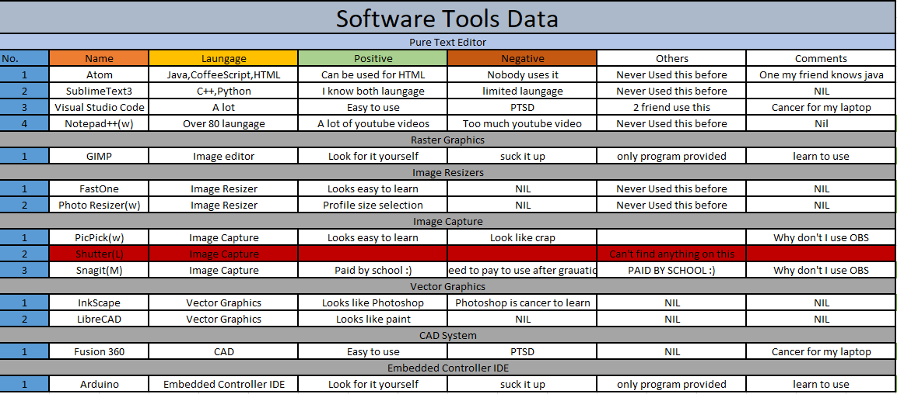

Selecting the right tool for the job is crucial! This guide shows how I choose the proper software for each job.
I started by recording down the tools offered and listing the advantages and disadvantages.

This list is taken from the start of the project and is updated as I progress further into the module. To see
how much I how much I had improved over to past few weeks, take a look at my old site. It may not be much
but I could improve by creating more sites (or learn to use bootstrap).
The tools selected below are used in the process of making the site with reasons why they are chosen
| Purpose |
Choice |
Reasons |
| Text Editor |
Atom |
i like the design better than visual studio code Take note that you have to be neat in your work to not get confused. |
| Graphics Editor |
GIMP |
It's free and works like photoshop |
| Vector Editor |
Adobe illustrator |
The school provide me with free software |
| Screen Capture |
OBS |
Easy to use, Easy to learn, able to record screen and voice, Lots of youtube video to learn from. |
| Image Resizer |
Adobe |
It works online so it does not require you to download anything |
| CAD System |
Fusion 360 |
The only CAD software still on my laptop Don't work for my destop |
| IDE |
Arduino |
Not much choice here, arduino is needed for the final project |
| Browser |
Chrome |
Everybody uses it, friend can visit site without installing anything new, accepts most languges. |
|